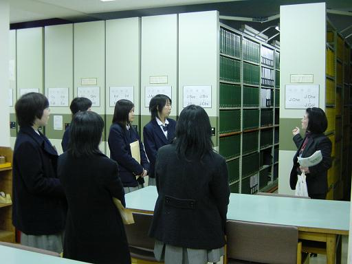

理大図書館見学・業務体験（県立岡山東商業高校編）
2005年2月7日、県立岡山東商業高校の３年生５名にお越しいただき、理大図書館見学・業務体験ツアーが開催されました。
このページでは、その時の様子をちょっとだけご紹介します。

見学として、21号館図書館、11号館図書館を見て回りました。
写真は、電動書架の見学の様子。その名の通り、「電気で動く書架」です。
わざと挟まれてみて、安全装置の挙動も体験してみました（「お約束」ですね）。
見学の後は、いよいよ業務体験です。
まずはカウンターにて、貸出･返却の業務をやってみます。
高校の図書室との違いに少々戸惑いつつも、ひとつひとつ丁寧に手続きしていきます。
“Okayama Univ. of Sci. LIbrary ONline system.”
愛称“OLION”の体験です。
“OLION”では、図書館の資料を探すことはもちろん、探している資料が貸出中かどうか、貸出中の時は返却予定日がいつなのかも調べることができます。
まず、全員で同じ図書を検索してみましょう…。
カウンターから場所を移し、オフィスでの業務体験。
オンライン発注業務を体験した後、体験したい業務別に２班に分かれます。
Ａ班は、図書の受け入れ業務の体験です。
この業務では、図書館のデータベースに図書のデータを登録します。
体験前に、業務の簡単なレクチャーを受けています。
図書館の本がどうやって棚に並ぶのか、皆さん興味津々です。
Ｂ班は雑誌の受け入れ業務の体験です。
図書と雑誌、見た目は似ていても、業務上の取り扱い方はまったく異なります。
…このように、見学と業務体験で、あっという間に予定の時刻になりました。
最後に、全員学外利用者としての登録を済ませ、利用者カードを受け取って帰りました。
いかがでしょう？見学・業務体験のイメージは膨らみましたか？
それでは、参加者の皆さんからの感想をどうぞ。
★ふだん分からない仕事の部分まで見せてもらえて新鮮だった。
★いろいろな業務体験をさせて頂いて、それぞれとても丁寧に教えて頂き、楽しく体験できました。
初めてのことだらけで少しドキドキしましたが、本当に分かりやすくてよかったです。
普段できないことや将来自分があまり関わらないような事ができたので、貴重な体験ができてよかったと思います。
★本来の仕事そのままをやらせてもらえたのでおもしろかったです。
貸出・返却の仕事体験が学生さん相手だったのでリアルな体験でした。
★何度も質問したのですが、分かりやすく答えて下さったので良かったです。
★図書の受入で、十進法の分類がとても難しかったです。
とても細かく分けられていて、すごく驚きました。でも、時間があったらもっとやってみたかったです。
参加して下さった東商業高校の皆さん、本当にありがとうございました。
初めての見学・業務体験ツアーと言うことで、不手際も多かったことと思います。
にも関わらず、アンケートや口頭で、「楽しかった」と言っていただき、館員一同ほっと胸をなで下ろしています。
また、ぜひ、利用者としてお越し下さいね♪
見学・業務体験ツアーのページへ
図書館のホームページへ